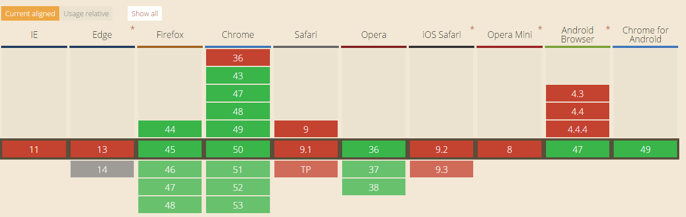
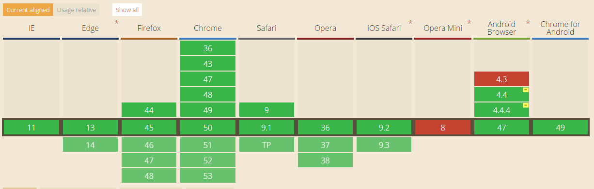
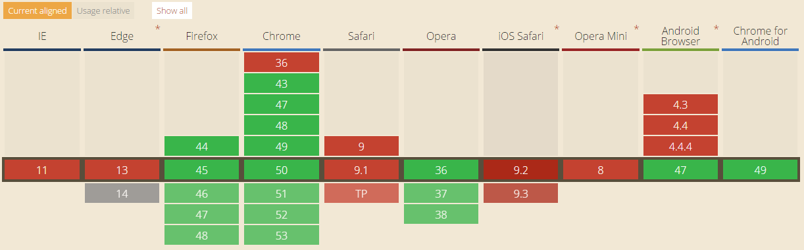

APIs do HTML5
Pedro Silva e Túlio Mitre
O que é a Beacon API?
- Beacon é uma API para envio de pequenos "pacotes" de dados, como análises ou diagnósticos de uso, para o servidor, de forma assíncrona, quando o usuário escolhe sair da página.
- Solução para delays no carregamento da próxima página a ser visitada.
- Garantia de que todos os dados necessários serão coletados.
Como usar a Beacon API?
window.addEventListener('unload', function(event) {
var data = captureAnalyticsData(event);
navigator.sendBeacon('/log', data);
});
E posso usar nas minhas páginas?

Pra que serve?
- Page Visilibility é uma API que deixa o desenvolvedor saber se a página atual está em foco.
- Uso razoável: pausar um vídeo caso o usuário troque a aba atual.
- Outro uso razoável: economizar recursos evitando o desempenho de algumas funções desnecessárias quando fora de foco.
E como eu uso?
var hidden, visibilityChange;
if (typeof document.hidden !== "undefined") {
hidden = "hidden";
visibilityChange = "visibilitychange";
} else if (typeof document.mozHidden !== "undefined") {
hidden = "mozHidden";
visibilityChange = "mozvisibilitychange";
} else if (typeof document.msHidden !== "undefined") {
hidden = "msHidden";
visibilityChange = "msvisibilitychange";
} else if (typeof document.webkitHidden !== "undefined") {
hidden = "webkitHidden";
visibilityChange = "webkitvisibilitychange";
}
var audioElement = document.getElementById("audioElement");
function handleVisibilityChange() {
if (document[hidden]) {
audioElement.pause();
} else {
audioElement.play();
}
}
if (typeof document.addEventListener === "undefined" ||
typeof document[hidden] === "undefined") {
alert("Esse navegador não suporta a Page Visibility API.");
}
else {
document.addEventListener(visibilityChange, handleVisibilityChange, false);
Posso usar nas minhas páginas?

Pra que serve?
- A Battery Status API é uma API usada para retornar o nível da bateria, se ela está carregando ou não.
- Uso razoável: limitar algumas funções que poderiam resultar em altos gastos de bateria.
- Outro uso razoável: salvar possíveis configurações logo antes da bateria acabar.
E como eu uso?
navigator.getBattery().then(function(battery) {
document.getElementById('batteryst').innerHTML = 'Status da bateria: ' + battery.level * 100 + ' %. ';
battery.addEventListener('levelchange', function() {
document.getElementById('batteryst').innerHTML = 'Status da bateria: ' + battery.level * 100 + ' %. ';
});
});
Bateria
Posso usar nas minhas páginas?
